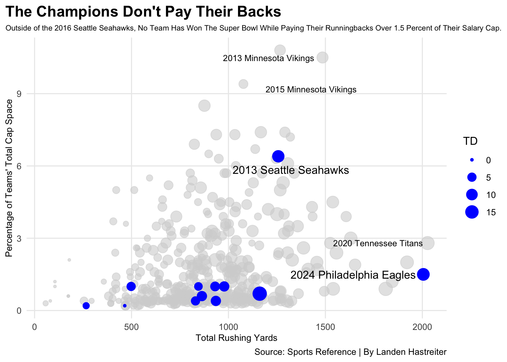
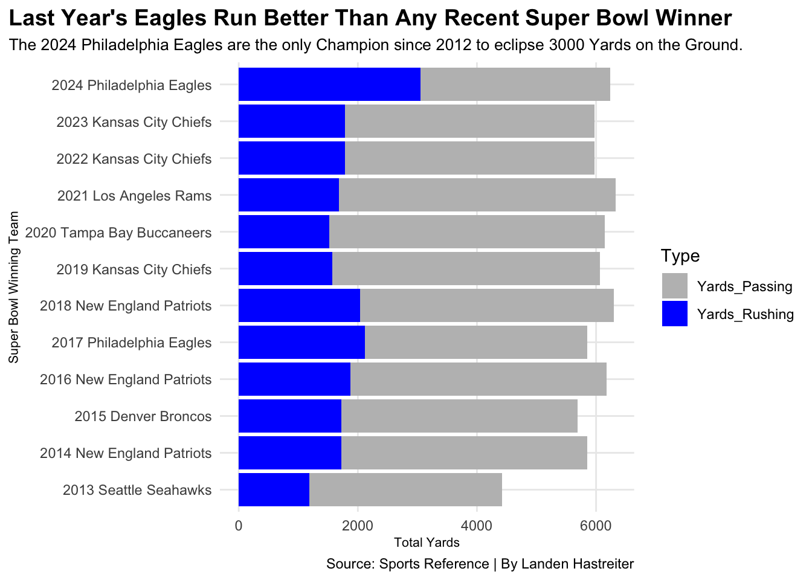

In 2023, Indianapolis Colts running back Jonathan Taylor just one full season removed from being a First-Team All-Pro, decided to not play in the first four games of the season due to a dispute of the value of his contract. Taylor eventually signed the dotted line on a new three-year, 42 million dollar contract, but the damage to the Colts season was already done. Through the first four weeks of the regular season, Indianapolis posted a 2-2 record, losing one game in overtime to the Los Angeles Rams. That proved to be costly, as the Colts finished just one game back of the division winning Houston Texans, as well as the last wild card team, the Pittsburgh Steelers.
That begs the question: Are NFL Running Backs Truly Undervalued? Stats will help us determine whether that is the case.
In 2012, Minnesota Vikings running back Adrian Peterson won the Most Valuable Player Award. Safe to say that there were not questions about the value of a good running back then, so our data will begin the year after. To start, we can look at how each tailback has ran for the amount of money they were being paid that season. Of course, the salary cap in the league is ever-changing, so we’ll look at the percent of cap room each running back took up on their respective teams, to get an idea of the true value.
Code
library(tidyverse)library(ggrepel)library(ggbump)library(gt)rbs <-read_csv("https://docs.google.com/spreadsheets/d/e/2PACX-1vSg9Fc3oarJZqnJbq98iavMRJD-bi4T7CLiChMVawOk26FEieJsaFirxrLpzguccTLg5hdevRlHFaTl/pub?gid=1935852139&single=true&output=csv")teams <-read_csv("https://docs.google.com/spreadsheets/d/e/2PACX-1vSg9Fc3oarJZqnJbq98iavMRJD-bi4T7CLiChMVawOk26FEieJsaFirxrLpzguccTLg5hdevRlHFaTl/pub?gid=1296879230&single=true&output=csv")millions <- rbs |>mutate(Cap = Team_Cap_Per*100)playoffs <- millions |>filter(Conference =="W")champions <- millions |>filter(SuperBowl =="W")thisyear <- millions |>filter(TeamYear =="2024 Philadelphia Eagles")pats <- millions |>filter(TeamYear =="2014 New England Patriots")beast <- millions |>filter(TeamYear =="2013 Seattle Seahawks")king <- millions |>filter(TeamYear =="2020 Tennessee Titans")minny <- millions |>filter(TeamYear =="2015 Minnesota Vikings")vikings <- millions |>filter(TeamYear =="2013 Minnesota Vikings")ggplot() +geom_point(data=millions, aes(x=Yds, y=Cap, size=TD), color="lightgrey", alpha=0.6) +geom_point(data=champions,aes(x=Yds, y=Cap, size=TD), color="blue") +geom_text_repel(data=thisyear, aes(x=Yds-15, y=Cap, label=TeamYear)) +geom_text_repel(data=beast, aes(x=Yds, y=5.5, label=TeamYear)) +geom_text_repel(data=king, aes(x=Yds, y=Cap, label=TeamYear), size=3) +geom_text_repel(data=minny, aes(x=Yds, y=10, label=TeamYear), size=3) +geom_text_repel(data=vikings, aes(x=1050, y=11.3, label=TeamYear), size=3) +labs(x="Total Rushing Yards", y="Percentage of Teams' Total Cap Space", title="The Champions Don't Pay Their Backs", subtitle="Outside of the 2016 Seattle Seahawks, No Team Has Won The Super Bowl While Paying Their Runningbacks Over 1.5 Percent of Their Salary Cap.", caption="Source: Sports Reference | By Landen Hastreiter" ) +theme_minimal() +theme(plot.title =element_text(size =15, face ="bold"),axis.title =element_text(size =9), plot.subtitle =element_text(size=7.5), panel.grid.minor =element_blank(),plot.title.position ="plot")

Those running backs in blue? Those are the most recent Super Bowl Champions. Last season’s Philadelphia Eagles and Saquon Barkley recorded the highest percentage total cap space taken up by a running back, but nothing compares to the anomoly that was the 2013 Seattle Seahawks.
However, it should be noted that Seattle is widely recognized for having a top 10 defense of all-time, regardless of era. The two Vikings teams at the top are a fallout from the 2012 Adrian Peterson MVP Season. Peterson made an average of $14,000,000 after that season, and his production was never the same. Minnesota would only make the playoffs once, however it should be noted that their defense only allowed the fifth most points in the entire league during that campaign, another sign that paying running backs may not be as valuable as the money they demand.
As a matter of fact, we can take a look at just the season alone to determine how running backs can be perceived in the modern era. One way to look at that can be rushing success. Sports Reference defines this stat as staying “ahead of the sticks” meaning gaining 40% of the necessary yards on first down, 60% on second down, and achieving a first down on either third or fourth down. By sorting the teams by this statistic and looking at how they faired in the postseason, while looking at the same percentage of team salary cap we previously graphed, the picture becomes even more clear.
Code
twentyfour <- rbs |>filter(Year =="2024")table <- twentyfour |>select(TeamYear, Succ_Per, Team_Cap_Per, Playoff_Result, Player) |>arrange(desc(Succ_Per))table |>gt() |>cols_label(TeamYear ="Team",Succ_Per ="Rush Success Rate",Team_Cap_Per ="Percentage of Team Cap",Playoff_Result ="Playoff Result",Player ="Leading Rusher" ) |>tab_header(title ="Does Success on the Ground Relate To Playoff Success?",subtitle ="Just over half of the teams that made the 2024 postseason posted a rushing success rate of above 50%." ) |>tab_style(style =cell_text(color ="black", weight ="bold", align ="left"),locations =cells_title("title") ) |>tab_style(style =cell_text(color ="black", align ="left"),locations =cells_title("subtitle") ) |>tab_source_note(source_note =md("**By:** Landen Hastreiter | **Source:** Sports Reference") ) |>tab_style(locations =cells_column_labels(columns =everything()),style =list(cell_borders(sides ="bottom", weight =px(3)),cell_text(weight ="bold", size=12) ) ) |>opt_row_striping() |>opt_table_lines("none") |>fmt_percent(columns =c(Succ_Per, Team_Cap_Per),decimals =1 ) |>tab_style(style =list(cell_fill(color ="blue"),cell_text(color ="white") ),locations =cells_body(rows = TeamYear =="2024 Philadelphia Eagles")) |>tab_style(style =list(cell_fill(color ="lightblue"),cell_text(color ="black") ),locations =cells_body(rows = TeamYear =="2024 New Orleans Saints")) |>tab_style(style =list(cell_fill(color ="lightblue"),cell_text(color ="black") ),locations =cells_body(rows = TeamYear =="2024 Indianapolis Colts")) |>tab_style(style =list(cell_fill(color ="lightblue"),cell_text(color ="black") ),locations =cells_body(rows = TeamYear =="2024 Arizona Cardinals"))
Does Success on the Ground Relate To Playoff Success?
Just over half of the teams that made the 2024 postseason posted a rushing success rate of above 50%.
Team
Rush Success Rate
Percentage of Team Cap
Playoff Result
Leading Rusher
2024 Atlanta Falcons
60.2%
2.0%
Missed Playoffs
Bijan Robinson
2024 Baltimore Ravens
58.8%
2.0%
Lost In Divisional
Derrick Henry
2024 Kansas City Chiefs
55.5%
0.3%
Runner-Up
Kareem Hunt
2024 Tampa Bay Buccaneers
55.1%
0.4%
Lost In Wild Card Game
Bucky Irving
2024 Carolina Panthers
54.8%
1.4%
Missed Playoffs
Chuba Hubbard
2024 Dallas Cowboys
53.6%
0.5%
Missed Playoffs
Rico Dowdle
2024 Detroit Lions
53.6%
1.7%
Lost In Divisional
Jahmyr Gibbs
2024 Buffalo Bills
53.1%
0.6%
Loss in Conference Championship
James Cook
2024 Philadelphia Eagles
52.5%
1.5%
Super Bowl Champions
Saquon Barkley
2024 Cincinnati Bengals
52.4%
0.4%
Missed Playoffs
Chase Brown
2024 Green Bay Packers
52.2%
2.1%
Lost In Wild Card Game
Josh Jacobs
2024 Arizona Cardinals
51.7%
4.4%
Missed Playoffs
James Conner
2024 New Orleans Saints
51.3%
6.3%
Missed Playoffs
Alvin Kamara
2024 Los Angeles Rams
50.9%
0.4%
Lost In Divisional
Kyren Williams
2024 New England Patriots
50.2%
2.1%
Missed Playoffs
Rhamondre Stevenson
2024 Minnesota Vikings
49.8%
1.4%
Lost In Wild Card Game
Aaron Jones
2024 Jacksonville Jaguars
49.4%
0.5%
Missed Playoffs
Tank Bigsby
2024 Miami Dolphins
49.3%
0.5%
Missed Playoffs
De'Von Achane
2024 Washington Commanders
48.7%
0.6%
Loss in Conference Championship
Brian Robinson Jr.
2024 Tennessee Titans
47.7%
1.6%
Missed Playoffs
Tony Pollard
2024 Cleveland Browns
47.1%
0.4%
Missed Playoffs
Jerome Ford
2024 San Francisco 49ers
47.1%
0.4%
Missed Playoffs
Jordan Mason
2024 Denver Broncos
46.8%
1.1%
Lost In Wild Card Game
Javonte Williams
2024 New York Jets
46.4%
1.0%
Missed Playoffs
Breece Hall
2024 Indianapolis Colts
45.9%
4.3%
Missed Playoffs
Jonathan Taylor
2024 Seattle Seahawks
44.4%
0.9%
Missed Playoffs
Kenneth Walker III
2024 New York Giants
44.3%
0.3%
Missed Playoffs
Tyrone Tracy Jr.
2024 Chicago Bears
43.9%
2.3%
Missed Playoffs
D'Andre Swift
2024 PIttsburgh Steelers
43.7%
1.7%
Lost In Wild Card Game
Najee Harris
2024 Los Angeles Chargers
42.6%
0.4%
Lost In Wild Card Game
J.K. Dobbins
2024 Houston Texans
42.4%
2.2%
Lost In Divisional
Joe Mixon
2024 Las Vegas Raiders
35.6%
0.9%
Missed Playoffs
Alexander Mattison
By: Landen Hastreiter | Source: Sports Reference
The Super Bowl Champion Eagles clock in at eighth on the list in terms of rushing success, but three more teams help paint the picture to better answer our question.The Arizona Cardinals, New Orleans Saints, and Indianapolis Colts. These three teams were the only ones to pay their running backs over four percent of the team’s total salary, but none of them found themselves in the postseason. Whereas the Kansas City Chiefs and Kareem Hunt, who only costed the Chiefs $820,833 against their salary cap, made the Super Bowl, while Hunt rushed at a success rate of 55.5%, good enough for third in the NFL.
Turning away from just this most recent season, we can also take a look at the teams who ended the season reigning as champions, determining if the ultimate goal of every NFL franchise, every single season, is fulfilled in part by having an efficent running back.
Code
big <- teams |>filter(SuperBowl =="W")rush <- big |>select(Year, TeamYear, Yards_Rushing, Yards_Passing, TotalYards)teamlong <- rush |>pivot_longer(cols=starts_with("Yards"), names_to="Type", values_to="Yards")ggplot() +geom_bar(data=teamlong, aes(x=reorder(TeamYear, Year), weight=Yards, fill=Type)) +scale_fill_manual(values =c("grey","blue" ))+coord_flip() +labs(x="Super Bowl Winning Team", y="Total Yards", title="Last Year's Eagles Run Better Than Any Recent Super Bowl Winner", subtitle="The 2024 Philadelphia Eagles are the only Champion since 2012 to eclipse 3000 Yards on the Ground.", caption="Source: Sports Reference | By Landen Hastreiter" ) +theme_minimal() +theme(plot.title =element_text(size =14, face ="bold"),axis.title =element_text(size =8), plot.subtitle =element_text(size=10), panel.grid.minor =element_blank(),plot.title.position ="plot" )

Once again, the reigning Super Bowl Champions appear to be an anomaly in terms of running back success leading to team success, and once again in large part to the breakthrough of Saquon Barkley. Another reason for this could be that many of the quarterbacks on this list are widely considered to be the greatest of all-time, or at least the greatest in their era. Field generals such as Peyton Manning, Patrick Mahomes, and the most notable, Tom Brady appears on the list four times (2014, 2016, 2018, 2020). When you have quarterbacks of that caliber, a coach’s first instinct is to put the ball in his hands.
But of course, when looking at statistics, a few other specifics jump out immediately. In 2017, the Philadelphia Eagles defeated the almighty Tom Brady in the Super Bowl, having backup quarterback Nick Foles under center the entirety of that contest. Philadelphia used a pair of backers in that game, LaGarrette Blount and Jay Ajayi, who costed the Eagles just 1.6 million against their salary cap. Darren Sproles, who was supposed to be the lead back the entire season, suffered a gruesome injury just three weeks into the season. For reference, the backfield duo costed the champions less than the Chicago Bears are paying third-string running back Travis Homer during the 2025-26 season. Yet another point towards winning while saving on ball carriers.
But, just like any professional sport, coaches have different strategies as to how they want to run their offense. So how does this fair from team to team? From running back to running back? To get a good glimpse of this, we can take a look at the recent seasons of the Denver Broncos.
During consecutive 2018 and 2019 campaigns, Phillip Lindsay posted 1000 yard seasons and looked like the future of the Broncos backfield. However, during the following season, Lindsay suffered a multitude of injuries from turf toe to concussions, forcing Denver to pivot at the running back position. They turned to backup Melvin Gordon, who they had given a 16 million dollar contract over two years, costing them an average of 7.9 million towards their salary cap. During Gordon’s time in the Mile High city, he could never recreate Lindsay’s production. While being a serviceable back for two seasons, his production never led to team success, as the Broncos failed to improve in the AFC standings in any year that Gordon was the workhorse. In 2022, it all fell apart, as Gordon fumbled five times in just 90 carries over 10 games, an average of 18 carries before the ball was put in harms way. Because of this, Gordon was ultimately released by the Broncos before the season’s end in December 2022.
After the collapse of Gordon, Denver turned to second year backup Javonte Williams. Williams, much like Melvin Gordon, never produced the yardage that Phillip Lindsay did, but his impact was monumental in the Broncos rise in the AFC playoff picture, only fumbling three times in his two years as the starter. More importantly, Williams only costed Denver 2.6 million dollars per year, aiding the 2025 AFC West division leaders to bolster their defense, which is regarded as the best in the NFL today.
So with that being said, Are NFL Running Backs Truly Undervalued? Statistics and history point to team success being built around saving at the running back position and bolstering other offensive weapons to truly create a well rounded team. However, for some teams, and more importantly some coach’s philosophies, a good running back can be the center of an offense that finds themselves in prime position to make a deep playoff run.